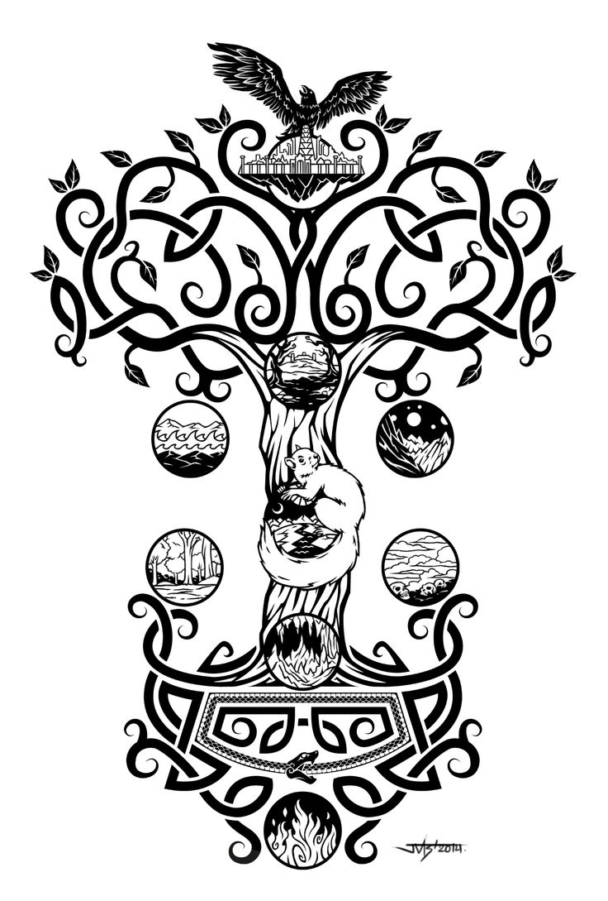

Początek świata
Na początku istniała Ginnungagap - ziejąca otchłań. Na południe od niej leżała ognista kraina Muspell, na północy zaś lodowata Niflheim. Z serca Niflheim wypływało 11 rzek, których trujący prąd hartował się w lodzie. Unosząca się z nich żrąca para tworzyła
szron. Gromadził się on warstwa po warstwie, aż zaczął się rozprzestrzeniać na Ginnungagap.
Lód i szadź wypełniały sąsiadujący z Niflheim obszar Ginnungagap, ale jej południową część ogrzewał ciepły wiatr wydobywający
się z Muspell. Kiedy lód zderzył się z ciepłem, powstały pierwsze ślady życia.
Ze stopionych odłamków lodu narodził się olbrzym Ymir. Trzej bogowie: Odyn, Vili i Ve zabili Ymira i z jego ciała stworzyli świat. Zanieśli zwłoki na środek
Ginnungagap i z trzewi uformowali ziemię, z kości zaś skały. Z krwi zrobili jeziora i morze. Z czaszki Ymira uformowali niebo i umieścili je ponad ziemią, ustawiając w każdym rogu jednego z czterech karłów: Nordri, Sudri, Austri i Vestri.
Włosy Ymira wykorzystali bogowie, aby stworzyć rośliny i drzewa, jego zaś mózg rozrzucili po niebie jako chmury.
